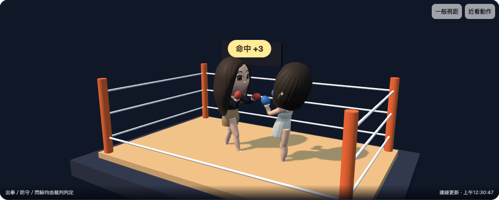
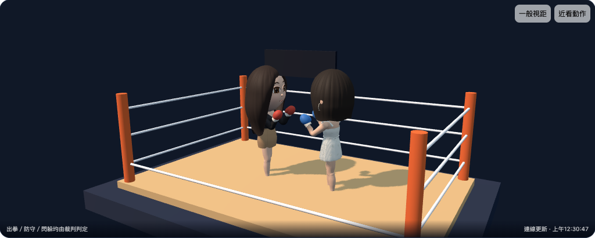
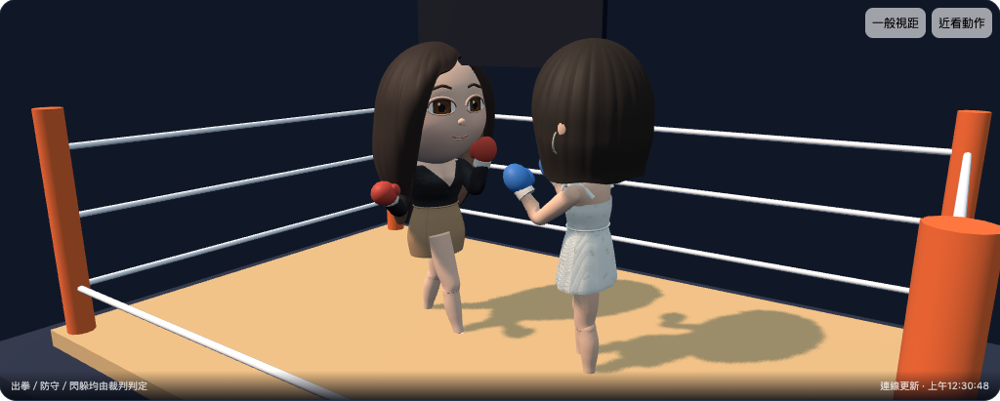
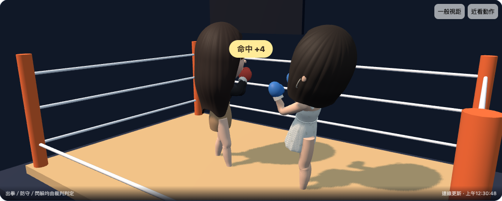
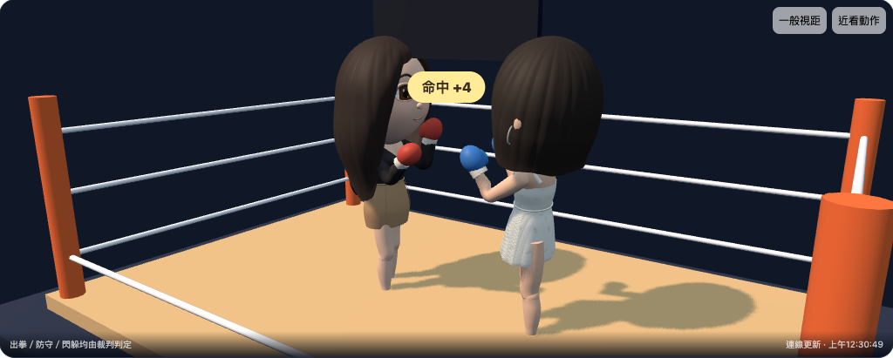
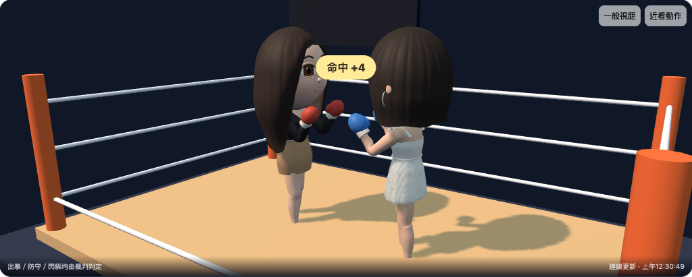
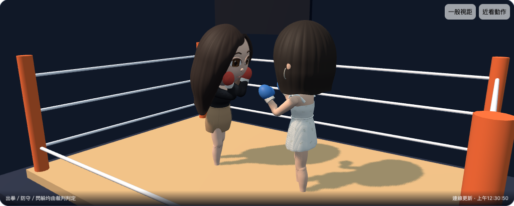
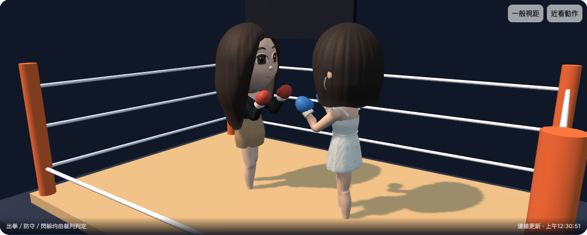
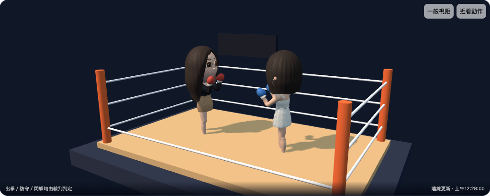

進測試廣場 → 直接進擂台 →
這是隔離 QA 的真實 3D 畫面，使用與共用城市相同的兩款已發布人偶資產。尚未接入真實同仁登入，也尚未在共用城市啟用。此輪只開榮譽對戰，不扣真實金幣或金牌。
錄影：最終站距的直拳、勾拳與格擋。若裝置無法播放影片，下面可逐張查看。閃身與後撤的連續圖使用相同動作驅動，拍於站距最後微調前。









已驗證完整 60 秒雙端賽果、原位置回讀與同源身份介面；趣味性仍待你實際試玩判斷，iPhone Safari 實機效能尚未驗收。